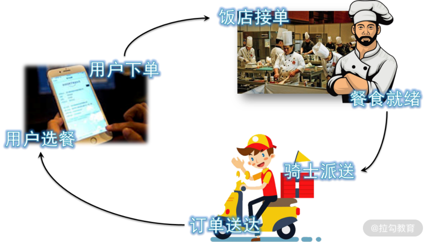
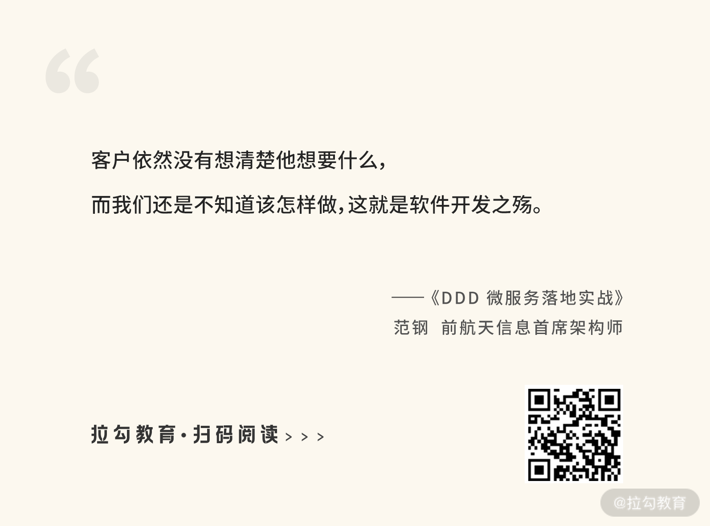
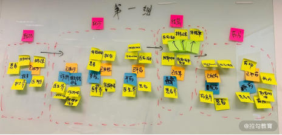
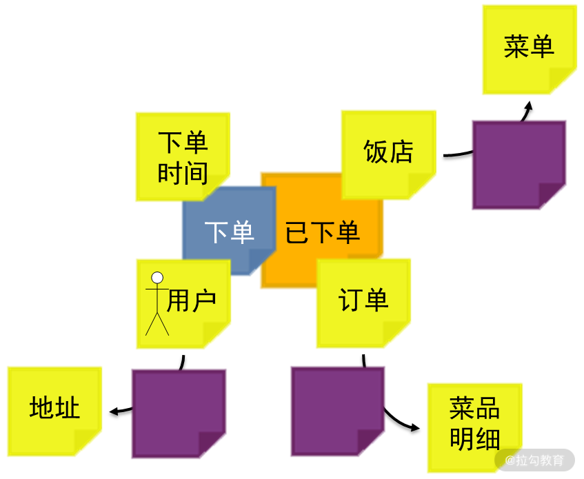
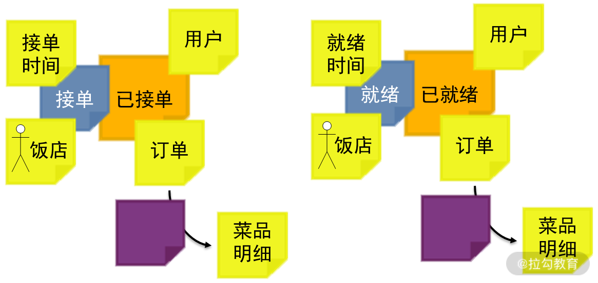
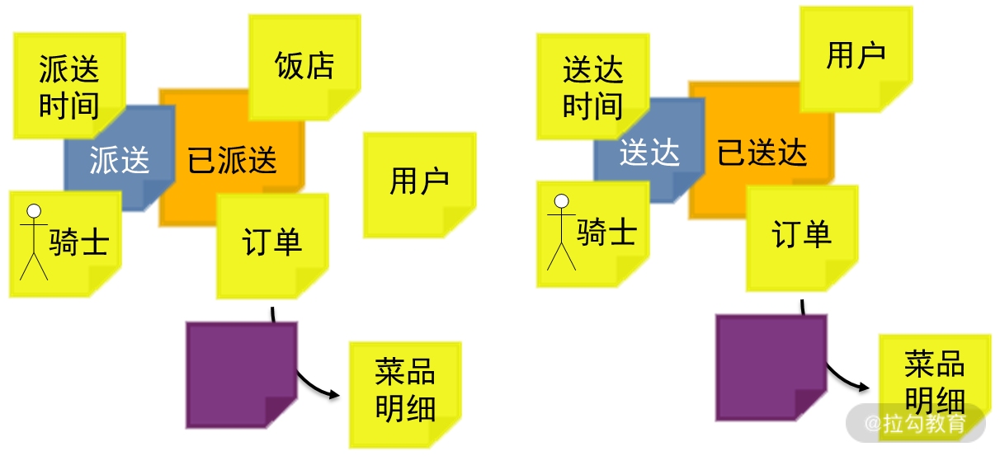

- 00 开篇词 让我们把 DDD 的思想真正落地.md.html
- 01 DDD ：杜绝软件退化的利器.md.html
- 02 以电商支付功能为例演练 DDD.md.html
- 03 DDD 是如何落地到数据库设计的？.md.html
- 04 领域模型是如何指导程序设计的？.md.html
- 05 聚合、仓库与工厂：傻傻分不清楚.md.html
- 06 限界上下文：冲破微服务设计困局的利器.md.html
- 07 在线订餐场景中是如何开事件风暴会议的？.md.html
- 08 DDD 是如何解决微服务拆分难题的？.md.html
- 09 DDD 是如何落地微服务设计实现的？.md.html
- 10 微服务落地的技术实践.md.html
- 11 解决技术改造困局的钥匙：整洁架构.md.html
- 12 如何设计支持快速交付的技术中台战略？.md.html
- 13 如何实现支持快速交付的技术中台设计？.md.html
- 14 如何设计支持 DDD 的技术中台？.md.html
- 15 如何设计支持微服务的技术中台？.md.html
- 16 基于 DDD 的代码设计演示（含 DDD 的技术中台设计）.md.html
- 17 基于 DDD 的微服务设计演示（含支持微服务的 DDD 技术中台设计）.md.html
- 18 基于事件溯源的设计开发.md.html
07 在线订餐场景中是如何开事件风暴会议的？
微服务设计最核心的难题是微服务的拆分，不合理的微服务拆分不仅不能提高研发效率，反倒还使得研发效率更低，因此要讲究“小而专”的设计。“小而专”的设计意味着微服务的设计不是简单拆分，而是对设计提出了更高的要求，要“低耦合、高内聚”。那么，如何做到“低耦合、高内聚”，实现微服务的“小而专”呢？那就需要“领域驱动设计”作为方法论，来指导我们的开发。
用“领域驱动设计”是业界普遍认可的解决方案，也就是解决微服务如何拆分，以及实现微服务的高内聚与单一职责的问题。但是，领域驱动设计应当怎样进行呢？怎样从需求分析到软件设计，用正确的方式一步一步设计微服务呢？现在我们用一个在线订餐系统实战演练一下微服务的设计过程。
在线订餐系统项目实战
相信我们都使用过在线订餐系统，比如美团、大众点评、百度外卖等，具体的业务流程如下图所示：

在线订餐系统的业务流程图
- 当我们进入在线订餐系统时，首先看到的是各个饭店，进入每个饭店都能看到他们的菜单；
- 下单时，订单中就会包含我们订的是哪家饭店、菜品、数量及我们自己的配送地址；
- 下单后，相应的饭店就会收到该下单系统；
- 接着，饭店接单，然后开始准备餐食；
- 当饭店的餐食就绪以后，通知骑士进行派送；
- 最后，骑士完成了餐食的派送，订单送达，我们就愉悦地收到了订购的美味佳肴。
现在，我们要以此为背景，按照微服务架构来设计开发一个在线订餐系统。那么，我们应当如何从分析理解需求开始，一步一步通过前面讲解的领域驱动设计，最后落实到拆分微服务，把这个系统拆分出来呢？
统一语言建模
软件开发的最大风险是需求分析，因为在这个过程中谁都说不清楚能让对方了解的需求。
研发不懂客户、客户也不懂研发
在这个过程中，对于客户来说：
- 客户十分清楚他的业务领域知识，以及他亟待解决的业务痛点；
- 然而，客户不清楚技术能如何解决他的业务痛点。
因此，用户在提需求时，是在用他有限的认知，想象技术如何解决他的业务痛点。所以这样提出的业务需求往往不太靠谱，要么技术难于实现，要么并非最优的方案。
与此同时，在需求分析过程中，对于研发人员来说：
- 非常清楚技术以及能解决哪些业务问题，同时也清楚它是如何解决的；
- 然而，欠缺的是对客户所在的业务领域知识的掌握，使得无法准确理解客户的业务痛点。
这就局限了我们的设计，进而所做的系统不能完美地解决用户痛点。
因此，在需求分析的过程中，不论是客户还是我们，都不能掌握准确理解需求所需的所有知识，这就导致，不论是谁都不能准确地理解与描述软件需求。在需求分析中常常会出现，客户以为他描述清楚需求了，我们也以为我们听清楚了。但当软件开发出来以后，客户才发现这并不是他需要的软件，而我们也发现我们并没有真正理解需求。尽管如此，客户依然没有想清楚他想要什么，而我们还是不知道该怎样做，这就是软件开发之殇。

如何破局需求分析的困境？
如何能够破解这个困局呢？关键的思想就在于“统一语言建模”。也就是说，以上问题的根源在于语言沟通的障碍，使得我不能理解你，而你也不能理解我。因此，解决的思路就是：
- 我主动学习你的语言，了解你的业务领域知识，并用你的语言与你沟通；
- 同时，我也主动地让你了解我的语言，了解我的业务领域知识，并用我的语言与你沟通。
回到需求分析领域，我们清楚的是技术，但不了解业务，因此，应当主动地去了解业务。那么，如何了解业务呢？找书慢慢地去学习业务吗？也不是，因为我们不是要努力成为业务领域专家，而仅仅是要掌握与要开发软件相关的业务领域知识。在业务领域漫无目的地学习，学习效率低而收效甚微。
所以，我们应当从客户那里去学习，比如询问客户，仔细聆听客户对业务的描述，在与客户的探讨中快速地学习业务。然而，在这个过程中，一个非常重要的关键就是，注意捕获客户在描述业务过程中的那些专用术语，努力学会用这些专用术语与客户探讨业务。
久而久之，用客户的语言与客户沟通，你们的沟通就会越来越顺畅，客户也会觉得你越来越专业，愿意与你沟通，并可以与你探讨越来越深的业务领域知识。当你对业务的理解越来越深刻，你就能越来越准确地理解客户的业务及痛点，并运用自己的技术专业知识，用更加合理的技术去解决用户的痛点。这样，你们的软件就会越来越专业，让用户能越来越喜欢购买和使用你们的软件，并形成长期合作关系。
我的项目应用举例
以我做过的一个远程智慧诊疗数据模型为例，这是一个面向中医的数据模型。在与客户探讨需求的过程中，我们很快发现，用户在描述中医的诊疗过程中，许多术语与西医有很大的不同。
比如，他们在描述患者症状的时候，通常不用“症状”这个词，而是用“表象”。表象包括症状、体征、检测指标，是医生通过不同方式捕获患者病症的所有外部表现；同时，他们在诊断的时候也不用“疾病”这个词，而是“证候”。中医认为，证候才是患者疾病在身体中的内部根源，抓住证候，将证候的问题解决了，疾病自然就药到病除了。我们把握了这些术语后，用这些术语与业务专家进行沟通，沟通就变得异常顺利。客户会觉得我们非常专业，很懂他们，并且变得异常积极地与我们探讨需求，并很快建立了一种长期合作的关系。
同时，在这个过程中，我们一边在与客户探讨业务领域知识，一边又可以让客户参与到我们分析设计的工作中来，用客户能够理解的语言让客户清楚我们是如何设计软件的。这样，当客户有参与感以后，就会对我们的软件有更强烈的认可度，更有利于软件的推广。此外，客户参与了并理解我们是怎么做软件的，就会逐步形成一种默契。使得客户在日后提需求、探讨需求的时候，提出的需求更靠谱，避免技术无法实现的需求，使得需求质量大幅度得到提高。
事件风暴会议
什么是事件风暴
在领域驱动设计之初的需求分析阶段，对需求分析的基本思路就是统一语言建模，它是我们的指导思想。但落实到具体操作层面，可以采用的实践方法是事件风暴（Event Storming）。它是一种基于工作坊的 DDD 实践方法，可以帮助我们快速发现业务领域中正在发生的事件，指导领域建模及程序开发。它是由意大利人 Alberto Brandolini 发明的一种领域驱动设计实践方法，被广泛应用于业务流程建模和需求工程。
这个方法的基本思想，就是将软件开发人员和领域专家聚集在一起，一同讨论、相互学习，即统一语言建模。但它的工作方式类似于头脑风暴，让建模过程变得更加有趣，让学习业务变得更加容易。因此，事件风暴中的“风暴”，就是运用头脑风暴会议进行领域分析建模。
那么，这里的“事件”是什么意思呢？事件即事实（Event as Fact），即在业务领域中那些已经发生的事件就是事实（fact）。过去已经发生的事件已经成为了事实就不会再更改，因此信息管理系统就可以将这些事实以信息的形式存储到数据库中，即信息就是一组事实。
说到底，一个信息管理系统的作用，就是存储这些事实，对这些事实进行管理与跟踪，进而起到提高工作效率的作用。因此，分析一个信息管理系统的业务需求，就是准确地抓住业务进行过程中那些需要存储的关键事实，并围绕着这些事实进行分析设计、领域建模，这就是“事件风暴”的精髓。
召开事件风暴会议
因此，实践“事件风暴”方法，就是让开发人员与领域专家坐在一起，开事件风暴会议。会议的目的就是与领域专家一起进行领域建模，而会议前的准备就是在会场准备一个大大的白板与各色的便笺纸，如下图所示：

事件风暴会议图
当开始事件风暴会议以后，通常分为这样几个步骤。
首先，在产品经理的引导下，与业务专家开始梳理当前的业务中有哪些领域事件，即已经发生并需要保存下来的那些事实。这时，是按照业务流程依次去梳理领域事件的。例如，在本案例中，整个在线订餐过程分为：已下单、已接单、已就绪、已派送和已送达，这几个领域事件。注意，领域事件是已发生的事实，因此，在命名的时候应当采用过去时态。
这里有一个十分有趣的问题值得探讨。在用户下单之前，用户首先是选餐。那么，“用户选餐”是不是领域事件呢？注意，领域事件是那些已经发生并且需要保存的重要事实。这里，“用户选餐”仅仅是一个查询操作，并不需要数据库保存，因此不能算领域事件。那么，难道这些查询功能不在需求分析的过程中吗？
注意，DDD 有自己的适用范围，它往往应用于系统增删改的业务场景中，而查询场景的分析往往不用 DDD，而是通过其他方式进行分析。分析清楚了领域事件以后，就用橘黄色便笺纸，将所有的领域事件罗列在白板上，确保领域中所有事件都已经被覆盖。
紧接着，针对每一个领域事件，项目组成员开始不断地围绕着它进行业务分析，增加各种命令与事件，进而思考与之相关的资源、外部系统与时间。例如，在本案例中，首先分析“已下单”事件，分析它触发的命令、与之相关的人与事儿，以及发生的时间。命令使用蓝色便笺，人和事儿使用黄色便笺，如下图所示：

“已下单”的领域事件分析图
“已下单”事件触发的命令是“下单”，执行者是“用户”（画一个小人作为标识），执行时间是“下单时间”。与它相关的人和事儿有“饭店”与“订单”。在此基础上进一步分析，用户关联到用户地址，饭店关联到菜单，订单关联到菜品明细。
然后，就是识别模型中可能涉及的聚合及其聚合根。第 05 讲谈到，所谓的“聚合”就是整体与部分的关系，譬如，饭店与菜单是否是聚合关系，关键看它俩的数据是如何组织的。如果菜单在设计时是独立于饭店之外的，如“宫保鸡丁”是独立于饭店的菜单，每个饭店都是在引用这条记录，那么菜单与饭店就不是聚合关系，即使删除了这个饭店，这个菜单依然存在。
但如果菜单在设计时，每个饭店都有自己独立的菜单，譬如同样是“宫保鸡丁”，饭店 A 与饭店 B 使用的都是各自不同的记录。这时，菜单在设计上就是饭店的一个部分，删除饭店就直接删除了它的所有菜单，那么菜单与饭店就是聚合关系。在这里，那个代表“整体”的就是聚合根，所有客户程序都必须要通过聚合根去访问整体中的各个部分。
通过以上分析，我们认为用户与地址、饭店与菜单、订单与菜品明细，都是聚合关系。如果是聚合关系，就在该关系上贴一张紫色便笺。
按照以上步骤，一个一个地去分析每个领域事件：
 
在线订餐系统的领域事件分析图
当所有的领域事件都分析完成以后，最后再站在全局对整个系统进行模块的划分，划分为多个限界上下文，并在各个限界上下文之间，定义它们的接口，规划上下文地图。
总结
按照 DDD 的思想进行微服务设计，首先是从需求分析开始的。但 DDD 彻底改变了我们需求分析的方式，采用统一语言建模，让我们更加主动地理解业务，用客户的语言与客户探讨需求。统一语言建模是指导思想，事件风暴会议是实践方法。运用事件风暴会议与客户探讨需求、建立模型，我们能更加深入地理解需求，而客户也更有参与感。此外，事件风暴会议可以作为敏捷开发中迭代计划会议前的准备会议的一个部分。
然而，通过事件风暴会议形成的领域模型，又该如何落地到微服务的设计呢？还会遇到哪些设计与技术难题呢？下一讲将进一步讲解领域模型的微服务设计实现。